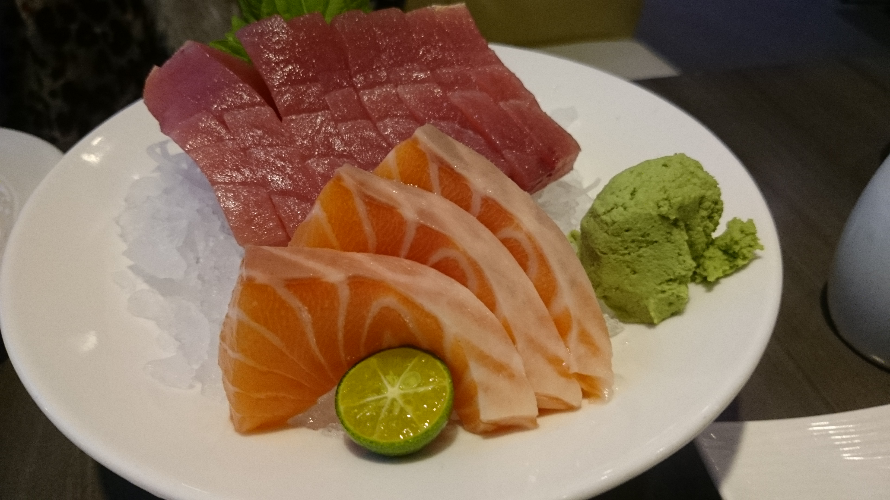
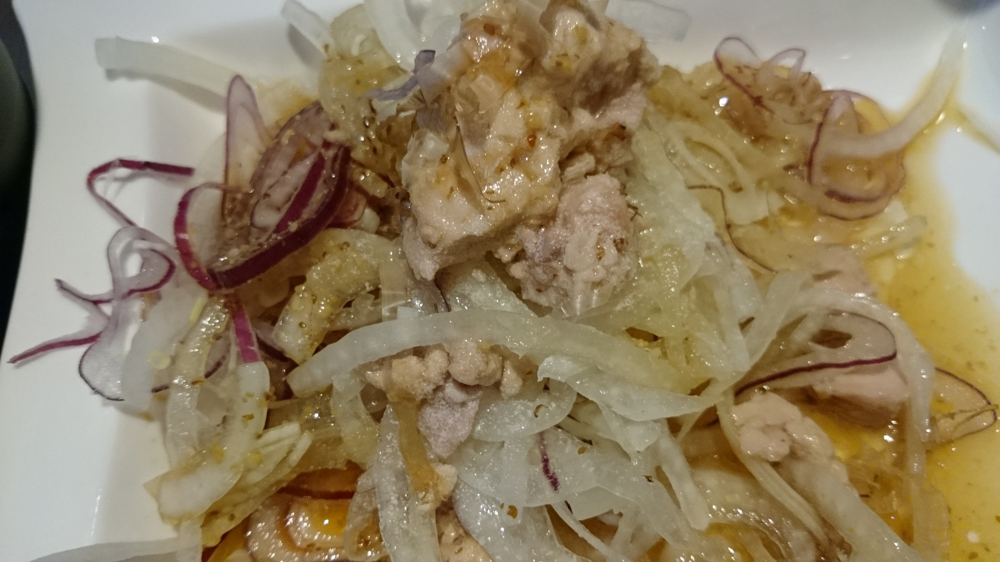
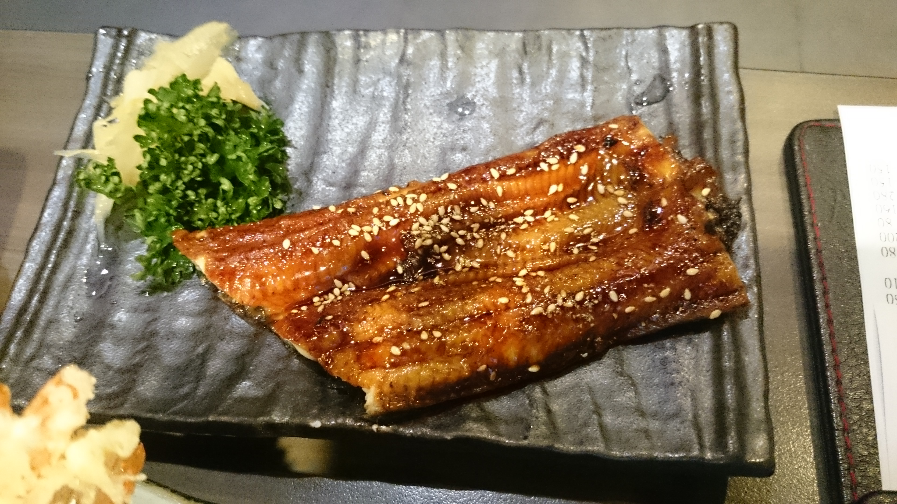

期末作品
使用reveal.js呈現作品集
張宇喬期末作品
哈囉~!讓我們開始複習學到的東西吧
可以使用上下左右來操作投影片
在前半堂HTML課程中
我們學會了使用各種標籤
呈現在網頁上
HTML的架構相當於網頁的骨幹非常重要
讓我們往下瞧瞧巴
作品1-旅遊紀錄
CYC's BLOG
推薦清單
- 生魚片
- 炸蝦天婦羅
- 洋蔥魚肝
- 烤鰻魚
在此我們學會了使用CSS
CSS相當於我們網頁美麗的衣服
可以讓我們的網頁變得美美的
標題1-工作經歷
- 曾在資訊處當打雜小弟
- 曾擔任過排球社副社長
- 曾擔任過班代
- 現任設計學院跑腿小弟
標題2-學習經歷
- 2015年的Morden web研討會
- Sitcon camp 2016
- 保哥的GIT入門教學
- 台灣樹莓派的入門教學
綜合以上所學的
第一次慢慢手刻網頁 好辛苦
不過也練了一些基本功